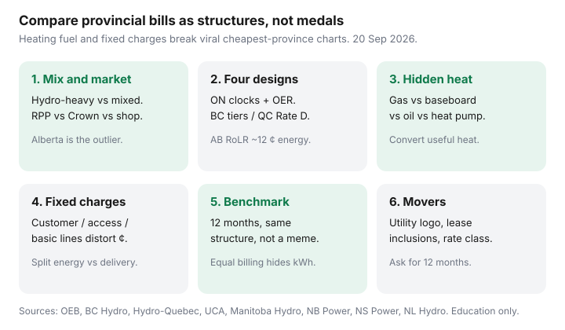

Utilities · Canada
Why Electricity Bills Differ So Much Across Canadian Provinces (A Household Framework)
Viral “cheapest province for hydro” charts ignore the furnace and the customer charge. If you want to compare electricity bills provinces Canada household to household, start with structure: who sets the ¢, whether you can shop, what the fixed daily or monthly line is, and whether January is gas, baseboards, oil, or a heat pump.
This is a household map, not an industrial tariff table. Ontario clocks are in TOU vs ULO vs Tiered. B.C. is in BC Hydro tiers. Québec is in Rate D. Alberta shopping is in the UCA tool.
Disclosure: There is no natural affiliate product in a cross-Canada rate-structure map. Saving Optimizer does not claim utility or regulator partnerships. This is education — not a provincial ranking or a rate quote.
Key takeaways
- Provinces differ by generation mix (hydro-heavy vs mixed) and by market design (one Crown utility vs Ontario RPP choice vs Alberta retail). A ¢/kWh screenshot is not a bill.
- Ontario RPP (1 Nov 2025–31 Oct 2026): TOU 9.8 / 15.7 / 20.3 ¢ plus local delivery and 23.5% OER. BC Hydro tiered: 11.87 / 14.08 ¢ and 23.44 ¢/day basic. Hydro-Québec Rate D (1 Apr 2026): 46.154 ¢/day plus 7.065 / 11.142 ¢. Alberta default electricity is RoLR ~12 ¢ energy to 31 Dec 2026.
- Heating fuel is the hidden driver. An electric-heat Québec plex and a gas-heat Calgary bungalow are not comparable on hydro ¢ alone. Convert useful heat in gas vs electric heat.
- Fixed customer charges make low-use condos look “expensive per kWh” and make ¢ rankings unfair. Always split energy vs delivery vs fees.
- Movers should pull 12 months at the new address class (or the listing’s utility letters), not a national average. Viral charts skip density class, oil tanks, and equal billing true-ups.
Generation mix and regulated vs competitive retail at a glance
Hydro-heavy systems (Québec, Manitoba, much of B.C. and Newfoundland’s island story is more complicated than a slogan) tend to print lower energy ¢ and recover more in access charges or tiers. Mixed or thermal-leaning systems (Alberta’s energy market, parts of Atlantic Canada) print higher energy ¢ or ask you to shop. Ontario sits in the middle: a provincial RPP commodity set by the OEB, plus local delivery, plus an optional retailer market almost nobody needs.
Regulated default vs competitive retail is the second axis. Ontario’s default is RPP (you elect a clock). Alberta’s default is RoLR electricity and a monthly Default Rate Tariff for gas — you may shop both. Most other provinces sell you one residential tariff from the Crown or investor-owned utility and do not run a porch-contract market for commodity.

Ontario RPP choice vs BC tiers vs Québec Rate D vs Alberta shopping
| Place | What a house actually faces | Household lever |
|---|---|---|
| Ontario | RPP clocks + LDC delivery + 23.5% OER; optional retailer | Elect TOU/ULO/Tiered; do not confuse with a contract |
| B.C. (BC Hydro) | Tiered 11.87 / 14.08 ¢ after ~22.19 kWh/day; optional flat 12.70 ¢ and ±5 ¢ time-of-day | Account Online estimator; FortisBC and municipal utilities are different |
| Québec | Rate D: 46.154 ¢/day + 7.065 ¢ then 11.142 ¢ after 40 kWh/day (1 Apr 2026) | Second-tier January baseboards; Flex D is a peak-event risk |
| Alberta | Shop energy; RoLR ~12 ¢ to 31 Dec 2026; delivery stays with the wires company | UCA Cost Comparison Tool; 10-day cooling-off on contracts |
| Manitoba | Flat 9.970 ¢/kWh + $9.84 basic (≤200 A) from 1 Jan 2026 | Usage and heat, not a clock; see the Manitoba guide |
| Atlantic (examples) | NB Power 15.84 ¢ + $30.82/$33.82 (14 Apr 2026); NS Power domestic 18.324 ¢ + $20.08; NL Hydro domestic 15.587 ¢ + $17.36 | Oil-heat history and heat-pump math matter more than a ¢ ranking |
Those rows are a map. A Toronto condo on gas heat and a Winnipeg bungalow on electric furnaces will not match a chart that pretends 750 kWh is “typical” everywhere.
Heating fuel is the hidden driver (gas vs electric vs oil)
January kWh on a gas-heat house is lights, dryer, and maybe a block heater. January kWh on baseboards or an air-source heat pump is the heating bill wearing an electricity costume. Oil tanks in Atlantic Canada and rural Ontario add a second vendor and a delivery fee the hydro PDF never shows.
Convert useful heat (GJ, kWh, AFUE, COP) before you declare a province “expensive.” The worksheet is natural gas vs electric heat. A heat-pump quote is a machine decision — heat pump vs furnace — not a reason to use a 2022 Greener Homes screenshot.
Delivery and fixed charges that make ¢/kWh comparisons unfair
Toronto Hydro’s $51.18 / 30-day customer charge and Hydro-Québec’s 46.154 ¢/day access fee are the same idea: you pay to be a customer. Divide a $50 customer charge by 250 kWh in a vacant month and you get a nonsense 20 ¢ “all-in.” Divide it by 2,500 kWh of electric heat and the fixed line almost disappears. Viral rankings that quote only energy ¢ hide that math.
Alberta makes the split explicit: energy is shoppable, delivery is not. Ontario hides the same split under four bill blocks. Manitoba’s $9.84 basic is small until you are a seasonal account paying the annual basic on a cabin you barely use.
How to benchmark your bill without viral “cheapest province” charts
- Split last 12 months into energy ¢ × kWh, fixed charges, riders/taxes, and any rebate (OER, etc.).
- Label the heat: gas, electric, oil, heat pump, or mixed. A $400 January is not a rate scandal if it is the furnace in disguise.
- Compare yourself to the same structure — another Rate D plex, another Hydro One low-density, another NB Power rural — not to a national average.
- If you are on equal billing, read the true-up. A flat debit is cashflow, not a cheap province. See equal billing.
Community threads on r/PersonalFinanceCanada are directional colour, not a survey. Someone’s “Alberta is $400” post may be a floating contract plus a −30°C week.
What movers should check before signing a lease or mortgage
- Who the utility is — FortisBC vs BC Hydro, Alectra vs Hydro One, Newfoundland Power vs NL Hydro, a municipal utility, an Alberta REA or gas co-op.
- What the lease includes — heat-included vs hydro. Decode that in heat included vs hydro before you celebrate a low rent.
- Heating plant — oil tank remaining life, baseboard amperage, heat-pump lockouts, gas availability.
- Rate class — Hydro One density, NB urban vs rural, Manitoba ampacity, Alberta distributor.
- Closed grants — Greener Homes and OHPA intakes are closed. Do not let a listing “assume” a dead $10,000.
Ask the seller or landlord for 12 months of bills or a utility letter. A single June PDF is a marketing brochure.
Sources & date stamps
- OEB electricity rates — RPP 1 Nov 2025–31 Oct 2026; 23.5% OER (used 20 Sep 2026).
- BC Hydro residential rates / BCUC — Step 1 11.87 ¢, Step 2 14.08 ¢, 23.44 ¢/day basic (tiered pages used 20 Sep 2026).
- Hydro-Québec Electricity Rates — Rate D 1 Apr 2026 (46.154 ¢/day; 7.065 / 11.142 ¢).
- UCA default rates — RoLR electricity ~12 ¢/kWh to 31 Dec 2026; DRT gas monthly.
- Manitoba Hydro residential rates — 9.970 ¢/kWh + $9.84 basic from 1 Jan 2026 (PUB Order 1/26).
- NB Power residential rates effective 14 Apr 2026; NS Power Domestic Service tariff ($20.08 + 18.324 ¢); NL Hydro Rate 1.1 ($17.36 + 15.587 ¢, Jul 2026 schedules).
Frequently asked questions
Which Canadian province has the cheapest electricity?
There is no honest one-line winner. Hydro-heavy systems often print lower energy ¢, but heating fuel, customer charges, and delivery change the household total. Compare structure and 12 months of bills, not a viral chart.
Why is my Ontario bill higher than a Québec relative’s at the same kWh?
Different commodity, different access/delivery, and the 23.5% OER vs Rate D tiers. If they heat with cheap second-tier hydro and you heat with gas plus a $50 customer charge, kWh is the wrong unit.
Can I take my Ontario ULO plan to Alberta?
No. ULO is an OEB RPP clock. Alberta is a retail-choice market with RoLR as the default energy price. You start over with the UCA tool.
Should I use a national average kWh to budget a move?
No. Pull bills at the new address class or ask for 12 months. Electric heat, oil, and a vacant condo are different machines.
Do delivery charges exist outside Ontario?
Yes — they may be called basic, access, customer, or distribution. Alberta splits them onto the distributor bill. Everyone pays some fixed cost to be a customer.